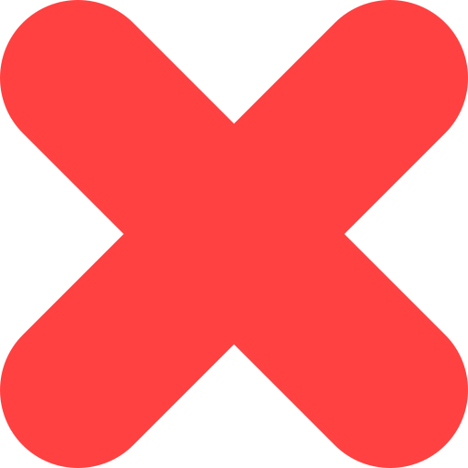

Образец семян относится к следующим классам: {{ result|join(', ') }} {% else %}
Образец семян не относится ни к одному из существующих классов, а значит не пригоден к использованию в промышленных целях
{% endif %}


{% for i in logs %}
Образец не принадлежит классу {{i[0]}}, т.к. значение признака {{i[1]}} меньше {{i[2]}} или больше {{i[3]}}
{% endfor %} {% if result|length > 0 %}Для классов {{ result|join(', ') }} противоречий не наблюдается, поэтому образец к нем относится.
{% else %}Образец семян не относится ни к одному из существующих классов, а значит не пригоден к использованию в промышленных целях
{% endif %}